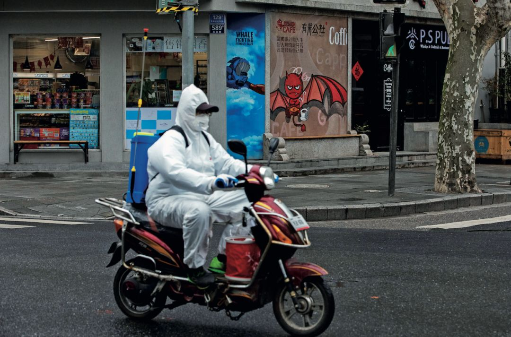
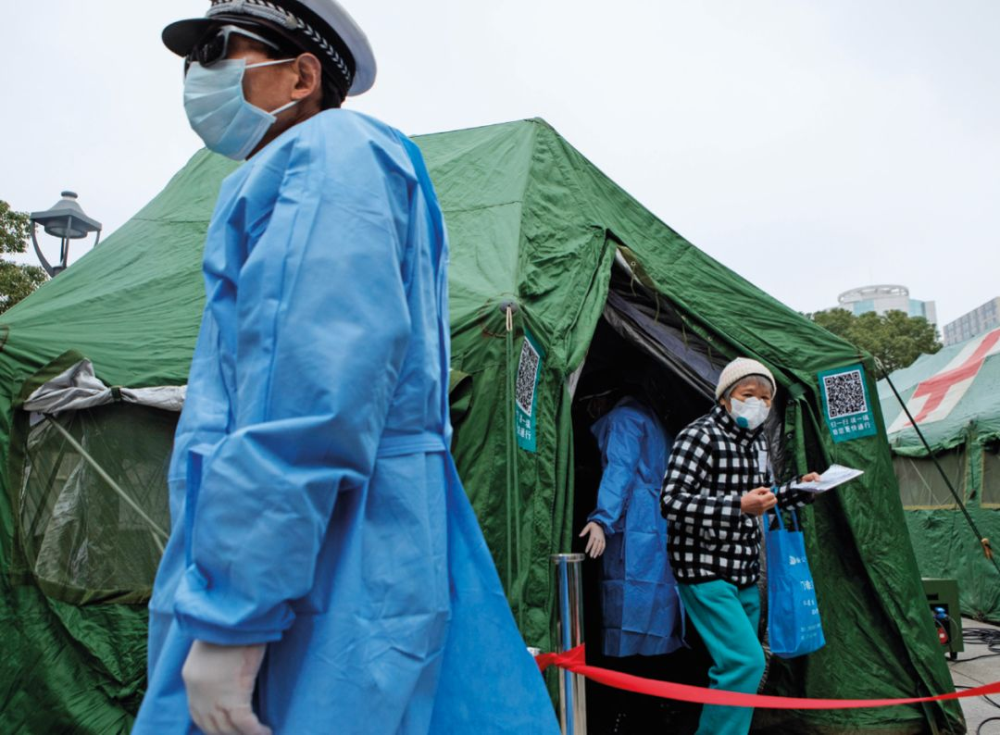

应对COVID-19（新冠病毒）：各国政府严控，市场有所放松
原文链接 备份链接 市场反馈认为，公共卫生事件对经济的影响有限；在应对疫情的关键时刻，政治和金融市场应对疫情展示出截然不同的态度 文 |《财经》特派记者 金焱 发自华盛顿 编辑 | 苏琦 2月11日，世界卫生组织通过社交媒体推特发布其确定 …

“新冠病毒就是一个阉割版的SARS和加强版的流感”


2月7日，上海永嘉路。街角店铺墙上有画着蝙蝠的广告，疫情当下，让人触目惊心。摄影/雍和
北上广：新冠疫情考验超级城市
*本刊记**者/杜玮 杨智杰 苏杰德*
发于2020.2.17总第935期《中国新闻周刊》
800万人返京的压力
王海今年的返京之路充满了变数。
2月2日那天，他本该在回京的路上，却接到房东的短信：韩家川村封村，从外地回来的一律不准进村，现在严得很。
这条信息让王海感到焦虑。他是北京一家科技公司的程序员，韩家川村位于北京市海淀区的西北旺镇，出于经济上的考量，他选择住在这里。他所住公寓里的二三百户人，绝大多数都和他一样是外地人。
如果提早返京，王海可能会无家可归，成为新冠肺炎疫情下的“北漂”。2月7日，他再次给房东打电话才得知，“封村”被解除了，可以回租所，但要自行隔离。而因为新冠肺炎，老家道路也封了，王海还是只能暂缓返京。
新冠病毒疫情让春节假期一再延长，复工日终于来临了：2月6日，中央应对新型冠状病毒感染肺炎疫情工作领导小组会议提出，湖北省以外地区要在继续做好科学防控的同时，有序推动恢复正常生产。
王海只是800多万返京人口中的一员，复工的焦虑摆在每个人的面前。
800万人如何返京，也是北京市防疫战的焦灼之处。1月31日，北京市政府果断决策：除疫情防控、保障城市运行等必需行业，各企业不得早于2月10日上班。这一决定引发了很多城市陆续跟进这一政策。
家在江西宜春的郑恺很早就踏上了返京的路途，途中历经了进出站测温、火车上填写旅客信息登记表、出站将信息表投递到收集箱中等一系列过程。2月1日晚9点，郑恺抵达了北京西站，提前抵京并不是单位要求，而是为了先做好14天的自我隔离。
受疫情影响，北京今年的返京客流与以往有很大不同。在2月2日举行的北京市新冠肺炎疫情防控新闻发布会上，北京市交通委副主任容军表示，从数据来看，不会出现集中返京的大客流。春运开始14天，通过铁路、民航出京的超过1000万人，截至2月2日，还有800万人未返京。
从订票数据来看，铁路、民航进京客流出现了明显下降。从2月2日至2月18日（春运最后一日）铁路进京旅客总人数206.02万人次，同比下降74.27％，民航进京旅客总人数71.42万人次，同比下降73.83％。剩余593万余人，将逐步订票回京。
虽然可能不会有集中客流，但800万的人流量依然会为北京防疫带来严峻考验。北京南站客运质量监督科科长潘仕刚在接受《中国新闻周刊》采访时称，目前，铁路部门针对旅客采取的举措依然以测温、填写信息表为主，对于无症状患者的筛查也没有更好的办法。北京南站的发车线路不途经武汉，对于浙江等疫情相对较为严重地区的返京旅客也暂时没有采取其他特别的措施。
2月6日北京市召开的新冠肺炎疫情防控工作领导小组会议，要求疫情高发区人员暂不返京。2月8日，北京市卫健委新闻发言人高小俊表示，可以明确湖北武汉属于疫情高发地区，病例超过千例的其他区域也要格外关注。
中国工程院院士韩德民称，对于湖北返京的人群，要限制人流量，对于在湖北有效隔离期未满的人员，可以考虑拒绝其返京。但如何证明返京人员完成了足够时间的自我隔离，这是一个问题，目前监督保障体系还没有建立起来。韩德民说，未来两三周对于北京是关键时期，返程要控制好。尤其以湖北为出发地人员的返京，如果控制不好，可能会带来北京疫情的加重。而在复工后，在办公室等公共场所，也要佩戴口罩。
美国加州大学洛杉矶分校公共卫生学院副院长、流行病学资深终身教授张作风说，除了车站及列车要做好常规消毒，车站工作人员要做好自我防护，如果可能的话，乘客的座位应保有间隔，乘客彼此间保持一定距离。对于疫情高发区的乘客，可集中安排在几个车厢，但乘客要做好自我防护。
张作风说，800万人返京，给北京疫情防控带来的压力很大，如果疫情控制不好，还会进而带来医疗资源紧张的问题。在此背景下，医护人员的防护措施尤其要做好，不仅是发热门诊，其他科室医护人员也要戴好口罩、一次性手套等，把院内感染控制好，有助于全局的疫情防控工作。
张作风分析，以2月2日的数据看，北京市的新增确诊病例是32例，至2月9日，新增病例是11例，新增病例的下降幅度已达66.5%。而从2月3日到2月7日的五天里，北京市新增病例保持在20个上下新病人的平稳期。如果在未来的返程期里，仍能保持住这个水平，北京市的疫情将能够有效控制。
“上海经验”的优势
缪晓辉是上海市公共卫生临床咨询专家，曾全程参与2003年上海市和北京小汤山SARS防控。在他看来，对此次疫情防控的反应，上海不算走在全国的最前头。
1月20日，一位56岁的武汉籍女性被确诊为上海第一例新冠病毒感染的肺炎病例。也是这一天，国家卫健委高级专家组组长钟南山接受央视采访，明确了新型冠状病毒会人传人。
上海市卫健委等多部门随即展开一系列行动，每天通报新增和疑似病例，制定相关防控工作方案，派出了第一批135名医疗专家驰援武汉。四天后，1月24日，上海市政府启动重大突发公共卫生事件一级响应机制。而在此之前，浙江、湖南和北京比上海的行动早了一步。
“一开始，大家都是蒙的状态。”缪晓辉对《中国新闻周刊》说，当时的上海市街头，并没有多少人戴着口罩。
1月23日，他在个人微信公众号上发布了一篇新型冠状病毒个人防护的科普文章，不到两个小时，点击量就超过10万，如此大的传播量对他而言非常少见。他理解，这意味着当时大众仍处在认识新冠病毒的初期。
变化大概从三天后开始。缪晓辉感觉，到了1月26、27日，上海市从居委会到各部门的行动，恢复到了2003年非典时期的“备战”状态。

2月3日，上海长海医院架设3顶军队野战帐篷作为入院通道，患者在此初检、测体温、登记健康信息。摄影/雍和
“目前上海的疫情进展，正处于从第一阶段的输入型转变为第二阶段的本地散发型。”复旦大学上海医学院副院长吴凡，也是上海市专家组成员，在她看来，尽管进入了第二阶段，但目前上海新发确诊病例，已经从最高点开始下落。吴凡认为：“从专家组的角度来看，截至目前，上海的疫情防控是有序有力有效的。”
在应对公共卫生事件上，上海可以说“身经百战”。
1988年春季，由于市民食用受到甲肝病毒污染的毛蚶，上海甲肝大暴发，仅3个月内造成了31万多人感染，31人死亡，恐慌情绪笼罩整个上海。
此后，上海经历了2003年“非典”、2005年禽流感、2009年甲型H1N1流感疫情。2013年，上海又报告了两例人感染H7N9禽流感，这是在全球首次发现，上海当时启动了市联防联控工作机制和流感大流行应急预案三级响应。
在受访专家看来，上海在这些突发疫情中一路摸索过来，也为此次新冠病毒疫情的防控积累了经验。
缪晓辉告诉《中国新闻周刊》，在此次新冠病毒疫情防控中，上海市公共卫生临床中心（以下简称“上海公卫中心”）发挥了重要作用。2003年“非典”过后，上海市政府为了加强公共卫生体系建设，在距离市中心60多公里外的金山区，建设了专门用于收治传染病患者的三甲医院，即上海公卫中心。这项工程被列为了当年政府的1号工程，2004年11月开业。
16年后，这里处于此次上海治疗新冠病毒肺炎的一线。上海公卫中心的主任朱同玉在接受《新民周刊》采访时提到，12月31日武汉宣布出现不明原因肺炎，1月2日、3日，公卫中心就开展了两整天的实战演练。上海按照“集中患者、集中专家、集中资源、集中救治”原则，疑似病例在各家医疗机构集中收治，确诊后全部送往公卫中心进行救治。
这免去了上海临时修建本地版“小汤山”医院的过程。同时，公卫中心在医疗条件、医护人员、仪器、药品配备上，都有绝对的优势。该中心有4栋应急病房，327张负压病床。这在世界卫生组织的规定中，是抢救“非典”等传染病病人时特别强调的一个重要条件。病房内气压低，被污染过的空气不会泄漏出去，而是专门排放，可以减少院内感染和病毒的传播。
上海市公共卫生临床中心教授、上海市专家组成员卢洪洲告诉《中国新闻周刊》，“从全国来看，我们有最多的负压病房。2004年建成以来，我们一直有这个战略储备。”
朱同玉还提到，如果上海的确诊人数增至150例，上海公卫中心就要启动临时病房的开建，草皮和图纸都已准备好，预留了地面600张床，需要建设时随时开始。
上海市2月9日新闻发布会透露，上海市公卫中心目前在院收治了250例新冠肺炎确诊患者，其中10例重症，10例危重症，数量早已超过150例。尽管官方尚未宣布启动临时病房建设，但近日，一张公告的照片出现在网上。公告显示，2月4日，上海公卫中心向闵行区浦江镇人民政府发函，提到“因疫情严重，我中心受上海市委市政府委托，组织建设‘上海市公共卫生临床中心应急救治临时医疗用房项目’”。
除此之外，卢洪洲认为，“非典”之后，上海在国内最早实行三级防护网络，即市、区（县）、社区医院防控体系，在管理上，为突发传染病的防控打下了基础。
吴凡解释，三级防护网络，平日老百姓不会有特别感觉，但在当下的非常时期，这个历经多年努力构建起的“大网”就发挥作用了，“大量疑似病例、轻症患者就在基层，这是更庞大的数量，就靠三级网络来防控。”她对《文汇报》表示。
社区卫生服务中心在此次疫情防控中，被放在了重要的位置。张阳是杨浦区一个社区卫生服务中心的公共卫生医师，过去半个多月，他每天穿梭在小区内，开展对重点地区来沪人员上门走访、对集中隔离人员宣教等工作。此次，上海市公布了110家设置发热门诊的医疗机构，覆盖全市16个区，包括三级、二级医院和社区卫生服务中心。社区卫生服务中心，需要与街道居委联动，摸排发现疑似病例。
防控下沉到社区，上海还有一个优势。“上海率先培养全科医生，全科医学系招生前就明确，毕业后进入社区工作，这些全科医生经过上海复旦、交通、二军医大等著名高等医科院校5年正规培训，并在三甲医院实习。可想而知，这些全科医生对传染病防范、面临重大公共卫生突发事件的鉴别能力，都会比曾经的地段医院（上海社区卫生服务中心的前身）强很多。”缪晓辉说。
他解释，在全科医生的教材中，第一堂课就是讲流行病学调查。全科医生在上门走访和出诊时，对重点排查是否从疫区来沪、如何处理应急情况等，都会具备较丰富的经验。
不同于武汉，在病例相对较少的上海，缪晓辉认为，可以充分利用全科医生，通过分级诊疗的方式防控疫情。
经历了多次突发公共卫生事件的上海，另一个副产品是，培养了上海人更为敏感和警惕的神经。目前，同样面临返程高峰和全面复工，从微博的热搜显示，上海人要比北京、广州、深圳人显得更为焦虑。
对于返沪人员，上海医疗救治专家组组长、华山医院感染科主任张文宏并没有上海式的含蓄细腻，他直率地说，“不管你的身份是老板、员工还是学生，都请配合好我们，返回上海后自觉在家‘闷’两个星期。等把发病的人都找出来后，其余人就安全了，这个策略叫‘闷’，需要你们每个人都作贡献。”
广东的“非典”后效应
截至2月10日，广东省新型冠状病毒肺炎确诊病例1151人。在重灾区湖北之外，广东省排名第二，与浙江、河南同为三个确诊病例破千的省份。
“广东和湖北人员往来密切，每天通过高铁和飞机交流的人员有数万人，因此必定带来输入病人，带来本地的发病风险。”广东省疾病预防控制中心在接受《中国新闻周刊》采访时表示， 广东是人口流动大省，人口流动会带来传染病的输入风险。
与这次的输入性病例不同，17年前，“非典”疫情在广东最早暴发，给广东留下了伤痛的回忆和深刻的教训。17年后，当新型冠状病毒来袭，广东严阵以待。
因而，早在2019年12月31日，广东省疾控制中心就对武汉疫情启动了内部应急响应准备机制，做好物资储备；1月3日，在全省对不明原因肺炎进行强化监测和动物市场环境监测；1月14日，广东发现疑似病例后，不仅成立了领导小组，还成立了以钟南山院士为总顾问的专家小组；1月23日，广东率先在全国启动了重大突发公共卫生事件一级响应。
不过，即使提前准备，各方还是低估了病毒的传染能力。广州市第八人民医院（下称广州八院）感染病中心ICU主任李粤平告诉《中国新闻周刊》：“新型冠状病毒狡猾而不凶狠，SARS是凶狠而不狡猾。”
狡猾的病毒迅速在广东扩散开来，社会总动员再次启动。“非典”之后，广东对公共卫生体系与社会响应进行了反思、重建和补短板，投入大量财政资金提升医院能力、完善疾控功能，这一切如今面临严峻疫情的“质量验收”。
“最开始没预料到会这么严重。”李粤平说，作为经历过“非典”防控的医生，她虽然听说了这个病毒，但没有想到会这么严重。
广州八院始建于1921年，以传染病防治及肝病综合治疗为特色。2003年“非典”期间，该院是广州市收治“非典”病人最多、时间最长的医院，总共收治了确诊和疑似病例413例（其中确诊265例），占广州市总确诊病例的近四分之一。其中收治的第一、第二代病人较多，包括转过两次院、传染了120多人的周姓“毒王”。
“非典”时期，广州八院面临巨大的挑战，病房、设备、资源都比较落后。 “非典”第二年，广州市政府迅速加强了传染病的医疗资源的建设，在白云区嘉禾开辟广州八院新院区，一期工程投资4.1亿元，二期建成后总投资达到10亿元。新院区隔壁就是广州市疾病预防控制中心。
广东出现新型冠状病毒疑似病例时，李粤平还在老院区工作，随着病人数量的快速增长，她被调到新院区。“基本上是以一天一层楼的速度来收病人的”，李粤平介绍，“疑似的和密切观察的病例，一个人需要住一间病房。一般来说，一个病区50张床左右，大概也就十几间病房，十几个人就占用了一层楼。”
而在“非典”时期，第八医院只有一座住院楼，肝炎、艾滋病和一些杂病都住在其中，隔离条件不理想。设备更不齐全，没有正规的ICU重症监护室，没有中央供氧，更不要说负压病房。
截至2月10日，广州市共确诊病例313位，病人数量略低于深圳，大约占广东省确诊病例的27%，广州市确诊的病例大部分都安置在广州八院。
对于这次发源于武汉的新型冠状病毒，和全国其他地方一样，在1月20日之前，广东也没有对病毒的严重性作出认定，但前期的防控重点放在了加强对医护人员的防护上。
李粤平介绍，这是汲取了非典的教训，包括外科、口腔科等所有的医生都要做好普遍防护。1月10日至14日之间，广州市卫生系统还专门安排人到各区的医院做督导，检查医院的发热门诊，重点检查医护有没有戴好口罩和手套。每家医院都要求所有员工参加培训，而且要求全部考核过关。
“2003年，医护人员没有什么防护，就是简单的棉布口罩，一般的隔离衣、手套和帽子。”广州八院心内科副主任医师童裕维说，相比于“非典”，这次疫情医护人员的防护要好很多，更重要的是，“这次很快就分离出来毒株，传播途径也比较清楚，防护起来针对性强，就没有那么害怕。”
不过，即使有过“非典”期间的经验，这次新型冠状病毒还是让医生感到非常棘手。
控制传染病有三板斧，一是控制传染源，二是切断传播途径，三是保护易感人群。“现在来看，我觉得控制传染源是最难的，”李粤平说，这次病毒太狡猾了，“病毒潜伏期长，不会安稳地在上呼吸道里待着，我们发现一些病情好转的病例，第一次检测达到解除标准后，又变成阳性的。此外，原来说潜伏期两周，现在也发现有潜伏期三周。还有一些上呼吸道感染病例，怎么检测都是阴性，突然加重了之后，检测发现下呼吸道病原是阳性的。”
不过，虽然新型冠状病毒来势汹汹，但在李粤平看来，这个病毒更像是大号流感，不必那么惊慌。截至2月8日，广州八院已经有28个病例出院，他们从发病到出院的时间，基本在两周以内，年龄大都在65岁以下，大部分人是轻症患者。
“对比‘非典’， 其病死率在10%左右，而新型冠状病毒的病死率是2.1%左右，流感的病死率大概是0.1%。”经过临床观察和分析后，李粤平认为，新冠病毒就是一个“阉割版的SARS和加强版的流感”。
但对危重病人，医生们不敢轻敌。目前，很多突然恶化的案例发生在武汉。李粤平认为，这是因为武汉病人太多，医护精力有限，医疗资源缺乏所致。病人住在隔离病区里，进去一次要穿戴很多防护服，资源短缺限制了医生经常近距离观察病人，“很多时候是通过视频来观察，这样医生有可能就发现不了病人缺氧等问题。”
据李粤平介绍，在广州八院，每隔几个小时就会有医护人员去床边探视病人。“我们到床旁去跟病人聊天，看他们的呼吸有多少次、脖子是不是有三凹征，通过胸廓起伏看他说话是否费力，病人喘着气跟你说话的状态，不到病床是观察不到的。”
在广东，以社会动员的方式弥补卫生资源的不足，扩大防控战线，也被当做“非典”后的重要经验。社会公众的应对心态也更从容。“非典”时期，广东先后出现了“抢醋”“抢盐”“抢药”的恐慌状况。而这一次，随着信息透明度的大力提升，公众心态明显更加平稳。
李粤平坦言，此次疫情防控，“社会力量和个人力量的参与，明显比‘非典’的时候好了很多。”
（应受访者要求，文中王海、郑恺为化名）
值班编辑：石若萧
推荐阅读
▼

图片故事| 方舱医院


*恒大全面实施网上购房，在家没事赚现金*
*VR看房亲身体验，恒大全国楼盘即将特大优惠*
*点击“阅读原**文”了解更多详情 *
原文链接 备份链接 市场反馈认为，公共卫生事件对经济的影响有限；在应对疫情的关键时刻，政治和金融市场应对疫情展示出截然不同的态度 文 |《财经》特派记者 金焱 发自华盛顿 编辑 | 苏琦 2月11日，世界卫生组织通过社交媒体推特发布其确定 …
原文链接 备份链接 疫情发展 根据丁香医生实时数据，截至 2020 年 2 月 6 日 18 时，全国累计确诊病例 28129 例，疑似病例 24702 例，新增确诊病例 3766 例，新增疑似病例 5328 例。其中，重症病例 3859 …
原文链接 备份链接 岛语 非常时期，武汉成了全国人民挂念、祈福的城市。封城后，武汉人民的真实生活是什么样？ 正和岛自1月26日起特别推出《叶青：我在武汉疫区的第N天》专栏。叶青是一位定居武汉40年的市民，也是一名学者和官员。接下来的一段时 …
原文链接 备份链接 刚果（布）马亚-马亚国际机场，旅客正在接受体温检测。图片来源：WHO/Elombat D. 记者 | 潘金花 “ 除了肯尼亚、南非等，多数非洲国家的重症监护医疗设施都很有限，一家医院可能只有10个床位可以满足重症监护条 …
原文链接 备份链接 *************▲*************2月2日，武汉大学中南医院影像科主任徐海波教授（白衣者）和同事查看患者的CT检查影像。 （新华社/图） 全文共1150字，阅读大约需要3分钟。 武汉确诊患者单日 …